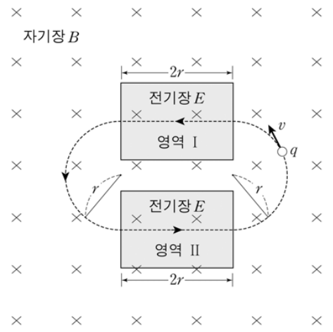
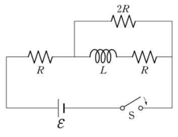
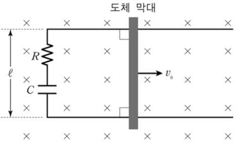
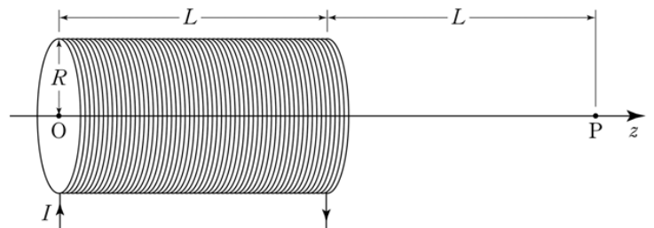
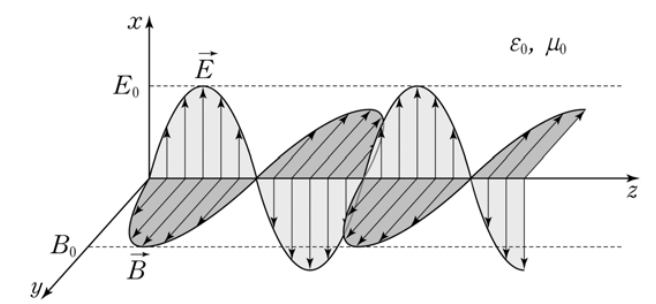

전자기학 객관식 6문항 — 전자기장 속 궤도·RL 회로·RC 레일·금속 비열·솔레노이드·전자기파E×B orbit · RL transient power · rod on rails with RC · metal heat capacity · finite solenoid · plane EM wave
2012학년도 중등교사 임용시험 물리 1차(객관식) 21~26번 — 전자기학 문항 묶음(24번은 고체의 비열). 각 문항에서 알맞은 답을 고르시오.
- 자기장 속 전하가 받는 힘 \(F=qvB\) — 속도에 수직이라 원운동(반지름 \(r=mv/qB\)).
- 인덕터: 스위치를 닫는 순간엔 전류가 0(끊긴 선), 오래 지나면 도선처럼.
- 축전기: 충전될수록 전류가 줄어든다. 전자기파: E와 B가 서로 수직, 진행 방향은 E × B.
그림과 같이 질량 \(m\), 전하량 \(q\)인 양(+)전하가 \(xy\) 평면상에서 점선 궤도를 따라 일정한 속력 \(v\)로 운동하고 있다. 크기가 \(B\)로 균일한 자기장은 전 공간에 존재하며 방향은 \(-z\) 방향이다. 영역 Ⅰ과 Ⅱ에서는 크기가 \(E\)로 균일한 전기장도 존재하여 전하는 \(x\)축과 평행하게 움직이며, Ⅰ과 Ⅱ 밖에서는 반원 궤도를 따라 움직인다. 두 반원 궤도의 반지름은 \(r\)로 서로 같고, 두 직선 궤도 길이는 \(2r\)로 서로 같다.

이에 대한 설명으로 옳은 것만을 <보기>에서 있는 대로 고른 것은? [1.5점]
- ㄱ. 영역 Ⅰ에서 전기장의 방향은 \(+y\) 방향이다.
- ㄴ. \(v=\dfrac EB\)이다.
- ㄷ. 전하가 점선 궤도를 따라 한 바퀴 도는 데 걸리는 시간은 \(\dfrac{2m}{qB}(\pi+2)\)이다.
- 그림의 화살표로 영역 Ⅰ에서의 운동 방향(−x)을 읽고, q v × B를 계산.
- 직선 운동 → 전기력과 자기력의 합 0.
- 반원 두 개 = 원 한 바퀴.
그림은 기전력 \(\mathcal E\)인 직류전원, 인덕턴스 \(L\)인 인덕터, 저항값이 각각 \(R\), \(R\), \(2R\)인 세 개의 저항으로 구성된 회로를 나타낸 것이다. 시간 \(t=0\)에 스위치 S를 닫고 난 직후 직류전원이 공급하는 전력은 \(P_0\)이고, S를 닫고 나서 \(t=\infty\)에서 직류전원이 공급하는 전력은 \(P_\infty\)이다.

\(\dfrac{P_\infty}{P_0}\)는? (단, 스위치를 닫기 전 회로에 흐르는 전류는 0이고, 인덕터에 의한 자체유도 이외의 자체유도 효과는 무시한다.)
- t = 0⁺: 인덕터 전류 = 0 (끊긴 것처럼).
- t = ∞: 인덕터 = 도선.
그림은 수평면상에 놓인 폭이 \(\ell\)인 ㄷ자 모양의 도선 위에서 저항이 없는 도체 막대가 외력에 의하여 일정한 속력 \(v_0\)으로 폐회로를 이루며 오른쪽으로 운동하는 것을 나타낸 것이다. ㄷ자 모양 도선에는 저항값이 \(R\)인 저항과 전기용량이 \(C\)인 축전기가 연결되어 있으며, 크기가 \(B\)인 균일한 자기장이 수평면에 수직인 방향으로 들어가고 있다. 막대가 등속운동을 시작하는 순간\((t=0)\)에 축전기에 충전된 전하량은 0이다.

\(t\ge0\)일 때, 이에 대한 설명으로 옳은 것만을 <보기>에서 있는 대로 고른 것은? (단, 자체유도 효과와 모든 마찰은 무시한다.)
- ㄱ. 도체 막대에 작용하는 자기력의 크기는 일정하다.
- ㄴ. \(t=\infty\)일 때, 축전기에 저장되는 전기에너지는 \(\dfrac12CB^2\ell^2v_0^2\)이다.
- ㄷ. \(t=0\)부터 \(t=\infty\)까지 외력이 도체 막대에 해준 일은 \(2CB^2\ell^2v_0^2\)이다.
- 기전력 Bℓv₀는 일정 — RC 충전 회로.
- 외력이 한 일 = 기전력 × (흐른 총 전하).
고체의 비열 \(C\)에 대한 데바이(Debye) 모형과 자유전자 페르미(Fermi) 기체 모형의 결과를 종합하면, 온도 \(T\)가 데바이 온도 \(\Theta_D\)와 페르미 온도 \(T_F\)보다 매우 낮은 경우 금속 고체의 비열은 \(C=\gamma T+AT^3\)으로 표현된다. 여기서 \(\gamma\)와 \(A\)는 양의 상수로 물질의 고유 값이다. 이 비열식에 대한 설명으로 옳은 것만을 <보기>에서 있는 대로 고른 것은? (단, 자유전자 페르미 기체는 페르미-디락(Fermi-Dirac) 분포를 따른다.) [2.5점]
- ㄱ. \(C\)의 두 번째 항\((AT^3)\)은 격자 진동에 기인한다.
- ㄴ. 페르미 에너지가 커지면 \(\gamma\)도 커진다.
- ㄷ. \(\gamma=6.5\times10^{-4}\ \text{J/mol·K}^2\)이고 \(A=1.7\times10^{-4}\ \text{J/mol·K}^4\)인 경우, 온도 범위 0 K\(\lt T\le\)1 K에서는 전자에 의한 비열이 격자 진동에 의한 비열보다 \(C\)에 더 크게 기여한다.
- 데바이 T³ 법칙은 무엇의 비열인가?
- 자유 전자: \(\gamma=\dfrac{\pi^2}{2}\dfrac{Nk_B^2}{E_F}\).
- \(\gamma T\gt AT^3\) ⇔ \(T\lt \sqrt{\gamma/A}\).
그림은 길이 \(L\), 반지름 \(R\)인 원형 솔레노이드에 일정한 전류 \(I\)가 흐르는 것을 나타낸 것이다. 솔레노이드는 가는 코일로 균일하게 감겨 있으며, 단위 길이 당 코일의 감은 횟수는 \(n\)이다. 원점 O는 솔레노이드의 왼쪽 끝의 중심축상에 있고, 점 P는 O로부터 오른쪽으로 \(z=2L\)인 중심축상의 지점이다.

P에서 자기장의 크기는? (단, \(xy\)평면에 놓인 반지름 \(R\)인 원형 고리에 전류 \(I\)가 흐를 때, 고리의 중심축인 \(z\)축을 따라 고리의 중심에서 거리 \(z_0\)인 점에서 자기장의 크기는 \(\dfrac{\mu_0IR^2}{2(z_0^2+R^2)^{3/2}}\)이다. \(\mu_0\)은 진공의 투자율이며, \(\displaystyle\int\frac{dx}{(x^2+R^2)^{3/2}}=\frac{x}{R^2\sqrt{x^2+R^2}}\)이다.)
- 두께 dz인 고리의 전류 = nI dz, P까지 거리 z₀ = 2L − z.
- x = 2L − z로 바꾸면 적분 구간은 x = L ~ 2L.
그림은 유전율 \(\varepsilon_0\)과 투자율 \(\mu_0\)인 진공 속에서 \(z\) 방향으로 진행하는 전자기파를 나타낸 것이다. 전기장 \(\vec E\)의 진폭은 \(E_0\)이고, 자기장 \(\vec B\)의 진폭은 \(B_0\)이다. 이 전자기파는 단색평면파이며, 파동 벡터(wave vector)는 \(\vec k\)이다. 포인팅 벡터는 \(\vec S=\dfrac1{\mu_0}\vec E\times\vec B\)이며, 전자기파의 세기 \(I\)는 \(\vec S\)의 크기의 시간평균이다.

이에 대한 설명으로 옳은 것만을 <보기>에서 있는 대로 고른 것은? [1.5점]
- ㄱ. \(\vec k\times\vec S=0\)이다.
- ㄴ. \(\dfrac{E_0}{B_0}=\sqrt{\mu_0\varepsilon_0}\)이다.
- ㄷ. \(I=\dfrac12\sqrt{\dfrac{\varepsilon_0}{\mu_0}}E_0^2\)이다.
- S의 방향 = 진행 방향?
- E₀/B₀의 차원은 속력.
- \(\langle\cos^2\rangle=\tfrac12\), \(B_0=E_0/c\).